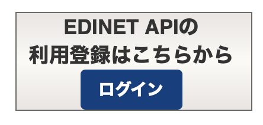
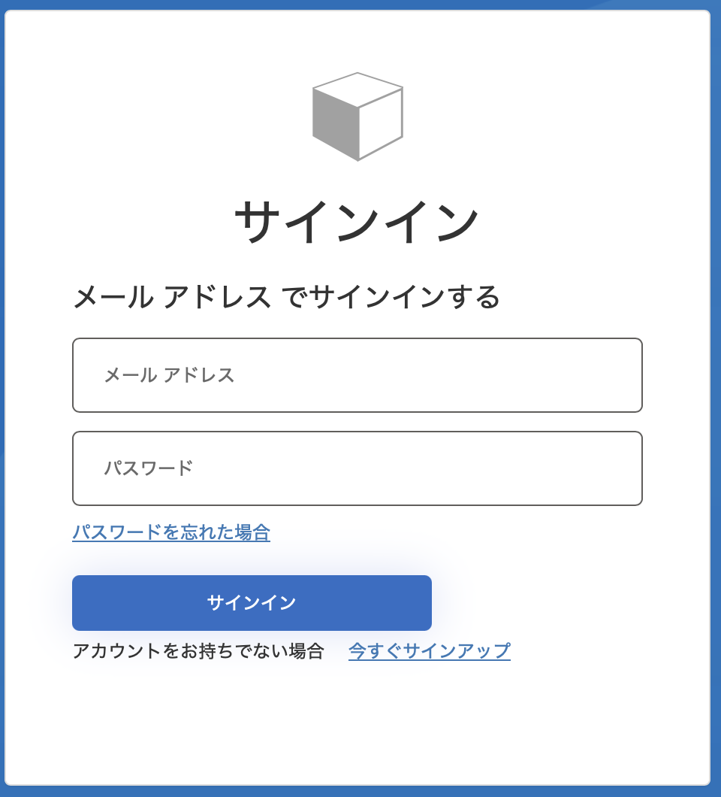
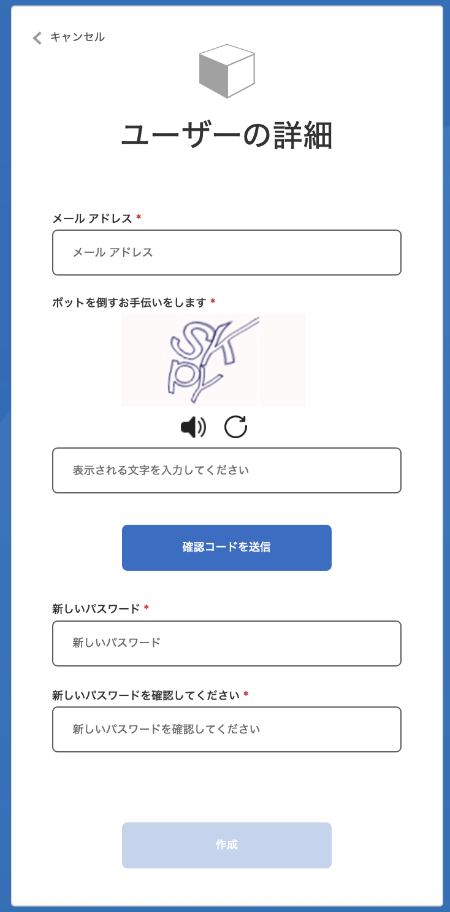
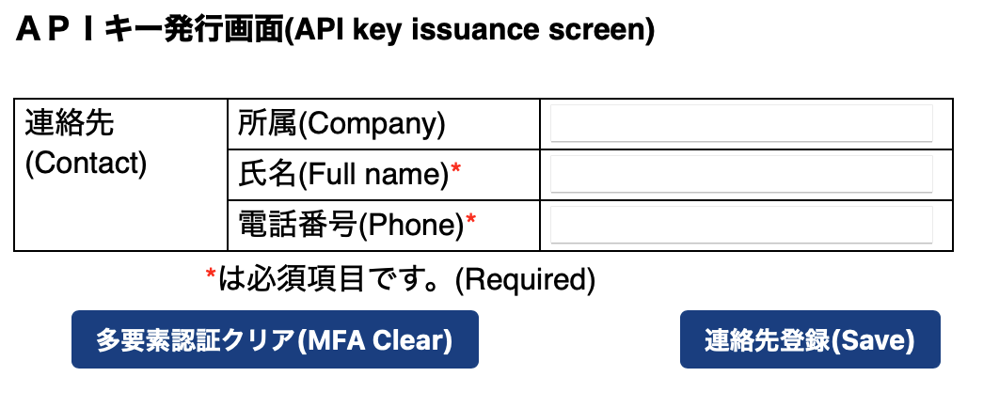

特別講義DS 補足A EDINET APIによる財務データの取得と回帰分析
資料
本資料は章番号外の補足資料です. 国の開示システム EDINET の API を利用して上場企業の有価証券報告書データを取得し, 整形・他データとの結合を経て, 回帰分析に使える時系列データ (企業 × 年度のパネルデータ) を作るまでの一連の流れを扱います.
本資料の元になったのは, 本講義の受講生であるピエレット・フィリップさんが研究で作成した一連のコードです. この研究は 「日本企業のESGスコアと企業財務の関係性に関する実証分析」 (ピエレット・赤木・江草, 2026) として論文にまとめられており, FTSE Russell の ESG スコアと EDINET から取得した財務指標を統合し, ESG スコアが財務パフォーマンスに与える影響を重回帰分析で検証しています (ESG スコアは ROA に正, 総資産回転率・売上高経常利益率に負の影響を持つ一方, PBR などの市場評価指標とは有意な関係が見られない, という結果が得られています). 論文本体と発表資料は Ch2 でも紹介している過去の研究事例のページ で閲覧できます.
研究で実際に使われたコードは「動かしながら育てた」ものなので, そのまま他の人が使うには難しい箇所がいくつもありました. 本資料ではコードを整理・改善した版を解説します. 元のコードにあった問題点は 最後の節 にまとめてあり, 自分の研究コードを書くときに同じ穴を避けるための教材になっています.
関連する章・補足:
- Ch6 データの取得と編集 — 政府統計などのデータソース一覧. EDINET もデータソースの 1 つとしてここで触れられています.
- Ch11 線形回帰分析 — 本資料の最終地点である回帰分析の手法的な説明.
- 補足B X(Twitter) APIによるデータの取得 — API を利用したデータ取得のもう 1 つの事例. 取得したデータの分析は Ch15 自然言語処理 で扱っています.
APIとは
本補足を含む補足資料シリーズでは, API を利用した外部データの取得を扱います. まず API そのものについて簡単に説明します (既に知っている人は次の節へ).
API（Application Programming Interface）とは,ソフトウェア同士がデータや機能をやりとりするための「窓口」のようなものです.開発者はAPIを通じて,他のサービスやアプリケーションの機能を利用できるため,複雑な処理を簡単に実行したり,他のサービスと連携することができます.
APIの利用に関わる主な通信技術には, HTTP/HTTPSプロトコル, REST（Representational State Transfer）, SOAP（Simple Object Access Protocol）,およびWebSocketなどがあり,それぞれ異なる目的や特徴を持っています.
本補足で扱う EDINET API も, 補足Bで扱う X API も, REST というアーキテクチャで提供されています. その概要は以下のとおりです.
HTTP/HTTPSプロトコル
APIの通信は通常,ウェブブラウザと同様にHTTPやHTTPSプロトコルを使って行われます.HTTPSは通信を暗号化し,セキュリティを確保するため,多くのAPIで推奨されます.
REST（Representational State Transfer）
RESTは,HTTPを利用してリソース（データや機能）にアクセスするための設計原則で,最も広く使われるAPI通信の形式です.REST APIでは,GET,POST,PUT,DELETEなどのHTTPメソッドを使ってデータを取得,作成,更新,削除します.シンプルかつ軽量なため,モバイルアプリやWebサービスでの利用に適しています.
GET
概要: リソース（データ）の取得に使用される.
例: ユーザー情報を取得する場合,GET /users/123のように送信すると,ユーザーIDが123のデータが返されます.
特徴: サーバー上のデータを変更しない「読み取り専用」操作.
POST
概要: 新しいリソースを作成するために使用される.
例: 新しい記事を投稿する場合,POST /articlesで記事データをサーバーに送信すると,新しい記事が作成されます.
特徴: サーバーにデータを送信して新しいエントリを追加する操作.
PUT
概要: 既存のリソースを更新するために使用される.
例: 記事の内容を変更する場合,PUT /articles/456で新しいデータを送信し,記事ID456の内容を更新します.
特徴: 指定されたリソース全体を置き換える操作.
DELETE
概要: リソースの削除に使用される.
例: 記事を削除する場合,DELETE /articles/456を実行すると,記事ID456が削除されます.
特徴: サーバーからリソースを取り除く操作.
REST APIでデータをやりとりする際のデータ形式として,JSON（JavaScript Object Notation）が一般的に使用されます.JSONはシンプルで軽量なテキスト形式で,読みやすく,プログラミング言語間の互換性も高いため,多くのAPIで標準的なフォーマットとして採用されています (Ch7 のJSONの節も参照).
{
"id": 123,
"name": "John Doe",
"email": "johndoe@example.com"
}データの取得 (本補足と補足Bの範囲) では, このうち GET メソッドだけを使います.
EDINETとは
EDINET (Electronic Disclosure for Investors’ NETwork) は, 金融庁が運営する有価証券報告書等の開示書類の電子開示システムです. 上場企業は事業年度ごとに有価証券報告書の提出が義務付けられており, そこには売上高・利益・資産などの財務情報が, XBRL という機械可読な形式で含まれています.
研究データとしての EDINET の利点は次の通りです.
- 無料・網羅的: 全上場企業の法定開示書類が誰でも取得できます.
- 機械可読: 各数値に「どの項目か (要素 ID)」「どの期間か」「連結か個別か」のタグが付いており, プログラムで処理できます.
- API がある: Web 画面を 1 社ずつ開かなくても, プログラムから一括取得できます.
一方で, 取得したデータはそのままでは分析に使えません. 報告書は「提出日」単位で並んでおり, 項目名は企業や年度によって揺れ, 1 つの報告書に過年度の値も混ざっています. 本資料の大部分は, この「取得したデータを分析可能な形に整える」作業の解説です. 実際の研究でも, データの取得・整形はしばしば分析そのものより時間がかかります.
XBRLの概要と構造
EDINET の開示書類の機械可読部分は XBRL (eXtensible Business Reporting Language) という形式で提出されています. XBRL は財務報告のための XML ベースの国際標準で, 「売上高 1,234 億円」のような値の 1 つ 1 つに「何の項目か」「どの期間か」「どの単位か」のタグを付けて表現します. 構造は大きく 2 つの部品からできています.
- タクソノミ (taxonomy): 項目 (要素) の定義辞書. 「売上高」「総資産」のような勘定科目等が要素 (element) として定義され, 名前空間付きの ID (例:
jpcrp_cor:NetSalesSummaryOfBusinessResults) を持ちます. EDINET では金融庁が定める EDINET タクソノミが使われ, 毎年更新されます. - インスタンス (instance): 実際の報告値の集まり. 個々の値 (fact) は, タクソノミの要素への参照に加えて, コンテキスト (context) (どの期間か・連結か個別か等) と単位 (unit) (円, 株など) への参照を持ちます.
つまり XBRL は「値の表」ではなく「タグ付きの値の集合」であり, 同じ「売上高」でも当期/前期, 連結/個別でコンテキストが異なる別の fact になります. 後述する CSV の「要素ID」列はタクソノミの要素に, 「コンテキストID」「相対年度」「連結・個別」列はインスタンスのコンテキストに対応しており, EDINET の CSV は XBRL を 1 行 1 fact の表に展開したものです. 本資料の整形作業で「重複の解決」が必要になるのは, この XBRL の構造 (同一項目に複数コンテキスト) に由来します.
XBRLを直接取得・パースする場合
本資料のパイプラインは EDINET が XBRL から変換して提供する CSV (書類取得 API の type=5) を使うため, XBRL を直接パースする必要はありません. ただし, CSV が提供されない書類 (古い書類や一部の様式) を扱う場合や, 注記・表構造などの詳細情報が必要な場合は, type=1 で XBRL 一式 (zip) を取得して直接読むことになります.
XBRL は XML なので, 最小限なら Python 標準ライブラリの xml.etree.ElementTree で読めます. zip 内の XBRL/PublicDoc/ にあるインスタンスファイル (拡張子 .xbrl) から, 特定の要素の fact を取り出す概念例です.
import xml.etree.ElementTree as ET
# 書類取得 API (type=1) の zip 内 XBRL/PublicDoc/*.xbrl を展開したファイル
tree = ET.parse("jpcrp030000-asr-001_XXXXXX.xbrl")
# 名前空間 URL はタクソノミの年度版によって変わる点に注意
# (インスタンスファイル冒頭の xmlns: 宣言で確認できる)
ns = {"jpcrp_cor":
"https://disclosure.edinet-fsa.go.jp/taxonomy/jpcrp/2025-03-31/jpcrp_cor"}
for fact in tree.getroot().findall("jpcrp_cor:NetSalesSummaryOfBusinessResults", ns):
print(fact.get("contextRef"), fact.get("unitRef"), fact.text)
# CurrentYearDuration JPY 123456789000 のように, コンテキスト・単位つきで値が取れる本格的に XBRL を扱う場合は, タクソノミの解決や検証まで行う OSS の XBRL プロセッサ Arelle が標準的なツールです (GUI と Python API の両方があります). いずれにせよ, 「要素 × コンテキスト × 単位で値が特定される」という上記の構造を理解していれば, CSV 経由でも XBRL 直接でも同じデータを読んでいることが分かるはずです.
APIキーの取得
EDINET API (v2) の利用には API キー (Subscription-Key) が必要です. キーは EDINET のサイトで誰でも無料で取得できます. 手順の詳細と最新情報は公式資料を参照してください.
- EDINET 書類検索 (閲覧サイト) — APIで取得する書類をブラウザで検索・閲覧できるページ. どんなデータが取れるのかをまずここで確認してみましょう.
- EDINET API 関連資料 — 仕様書・利用規約の置き場
- EDINET API 仕様書 (Version 2) — 上記ページから PDF をダウンロード
手順は次の通りです (EDINET API 仕様書 Version 2 の「2-3 アカウントの作成と API キーの発行について」に基づく).
手順1: サインイン画面の表示
EDINET の閲覧サイトに接続し, 「EDINET APIの利用登録はこちらから」の「ログイン」ボタンをクリックします.

手順2: サインアップ画面の表示
サインイン画面が表示されます. アカウントをまだ持っていないので, 下部の「今すぐサインアップ」のリンクをクリックします (2 回目以降はこの画面からサインインします).

手順3: 確認コードの送信
サインアップ画面 (ユーザーの詳細) で, 最上部の入力欄にメールアドレスを入力し, 「ボットを倒すお手伝いをします」の下に表示された画像認証の文字を二番目の入力欄に入力して, 「確認コードを送信」をクリックします. 入力したメールアドレスに確認コードが記載されたメールが届きます.

確認コードのメールは @microsoftonline.com のアドレスから届きます (EDINET の認証基盤は Microsoft のサービスを利用しています). 届かない場合は迷惑メールフォルダを確認してください. 大学のメールアドレスでフィルタが厳しい場合は, 受信許可設定が必要なことがあります.
手順4: コードの確認とアカウントの作成
メールで受信した確認コードを入力欄に入力し「コードの確認」をクリックします. その後, 同じ画面でパスワードを 2 回入力して「作成」をクリックするとアカウントが作成されます. パスワードは 12 文字以上で, 英数字と記号が使えます.
手順5: 多要素認証 (電話番号の登録)
アカウント作成後, 多要素認証画面が表示されます. 国コード (日本: Japan +81) を選び電話番号を入力して, SMS で届く確認コードを入力します (音声通話による確認も選べます). 電話番号はハイフンや空白の区切り文字を含めずに入力してください (例: 09012345678).
手順6: APIキーの発行
多要素認証でのサインイン後に API キー発行画面が表示されます. 連絡先 (所属・氏名・電話番号) を入力して「連絡先登録」をクリックし, 確認メッセージで「OK」を押すと, API キーが画面に表示されます.

API キー発行画面はポップアップで開きます. ブラウザのポップアップブロックが有効だと発行画面が開かず, 白い画面しか表示されないことがあります. その場合は EDINET のサイトをポップアップ許可サイトに追加してください. 許可の設定方法はブラウザ (Edge / Chrome / Safari など) によって異なります — EDINET API 仕様書 (Version 2) の「2-2 ポップアップ許可サイトへの追加」に手順が記載されているので, そちらを参照してください (一度許可すれば以後の発行・削除画面は継続して利用できます).
表示されたキーをコピーして安全な場所に保存してください. 以後の API リクエストでこのキーを使います (初回に発行したキーを継続して利用できます. 再表示はサインインし直せば可能です).
APIキーの管理
API キーはパスワードと同じ扱いをしてください. 以下は必ず守ること.
- ソースコードに直接書き込まない (書いた場合, そのファイルを提出・共有・公開した時点でキーが漏洩します).
- 本資料のコードでは環境変数
EDINET_API_KEYから読み込む形にしています. ターミナルでexport EDINET_API_KEY=<自分のキー>を実行してからスクリプトを動かしてください. - 万一キーを共有してしまった場合は, EDINET のページからキーを再発行してください.
全体の流れ
本資料のパイプラインは 6 つのスクリプトで構成されます. 各スクリプトは前の出力 (CSV) を読んで次の CSV を作る, という一本道です. コードは 配布ページ からまとめてダウンロードできます.
| 順 | スクリプト | 入力 → 出力 |
|---|---|---|
| 1 | fetch_documents.py |
EDINET API → 書類の索引 + CSV zip |
| 2 | build_financial_table.py |
zip 群 → 企業 × 年度の財務表 |
| 3 | compute_indicators.py |
財務表 → 財務指標 (ROA など) |
| 4 | fetch_prices.py |
索引 + Yahoo Finance → 株価 |
| 5 | merge_all.py |
指標 + 株価 + 業種 + (任意) ESG → 分析用データ |
| 6 | regression.py |
分析用データ → 可視化と回帰結果 |
必要なライブラリは次の通りです.
uv add requests pandas yfinance statsmodels seaborn matplotlib-fontja書類の取得
書類一覧API
EDINET API には大きく 2 つのエンドポイントがあります.
- 書類一覧 API
documents.json— 指定した提出日に提出された書類のメタデータ一覧を返す. - 書類取得 API
documents/<docID>— 書類 ID を指定して書類本体 (zip) を取得する.type=5で CSV 形式が得られます.
注意すべきは, 一覧が「企業」単位ではなく「提出日」単位であることです. 「この企業の報告書がほしい」ではなく「この期間に提出された報告書を全部見て, 必要なものを選ぶ」という発想で書きます. 有価証券報告書 (内国会社) は, メタデータの様式コード (ordinanceCode == "010" かつ formCode == "030000") で識別できます.
取得スクリプト
fetch_documents.py の主要部を見てみましょう.
API_KEY = os.environ.get("EDINET_API_KEY", "") # 各自取得したキーを設定する
BASE_URL = "https://api.edinet-fsa.go.jp/api/v2"
def fetch_document_list(day: datetime.date) -> list[dict]:
"""書類一覧 API (type=2) で 1 日分の提出書類メタデータを取得する."""
resp = requests.get(
f"{BASE_URL}/documents.json",
params={
"date": day.isoformat(),
"type": 2, # 2 = 提出書類一覧およびメタデータ
"Subscription-Key": API_KEY,
},
timeout=30,
)
resp.raise_for_status()
return resp.json().get("results", [])
def is_annual_securities_report(doc: dict) -> bool:
"""有価証券報告書 (内国会社) かどうかを様式コードで判定する."""
return (
doc.get("ordinanceCode") == "010"
and doc.get("formCode") == "030000"
and doc.get("csvFlag") == "1" # CSV が提供されている書類のみ
)
def download_csv_zip(doc_id: str, dest: Path) -> bool:
"""書類取得 API (type=5) で CSV 一式の zip を保存する."""
resp = requests.get(
f"{BASE_URL}/documents/{doc_id}",
params={"type": 5, "Subscription-Key": API_KEY}, # 5 = CSV
timeout=60,
)
if resp.status_code != 200:
return False
dest.write_bytes(resp.content)
return Trueこのスクリプトの一番重要な設計は, zip と同時に書類の索引 (documents_index.csv) を保存することです.
index_rows.append({
"docID": doc_id,
"edinetCode": doc.get("edinetCode"),
"secCode": doc.get("secCode"), # 証券コード (5 桁) - 以後の結合キー
"filerName": doc.get("filerName"),
"periodEnd": doc.get("periodEnd"), # 決算期末 - 株価の参照日に使う
...
})メタデータには証券コード (secCode) と決算期末 (periodEnd) が含まれています. この 2 つを最初に確保しておくと, 後の工程 (株価との結合, 業種との結合) がすべて「コードによる正確な結合」になります. 後述しますが, ここで企業名しか保存しないと, 後段のすべての結合が「文字列のあいまい一致」になり, パイプライン全体が脆くなります.
サーバへの配慮
API は便利ですが, 相手のサーバに負荷をかける行為でもあります. 取得期間は必要な範囲に絞り, リクエストの間に time.sleep() を入れ, 一度取得したファイルは再取得しない (スクリプトでは取得済み zip をスキップしています) ようにしましょう. 利用規約も必ず確認してください.
CSVの構造と整形
EDINETのCSVを読む
取得した zip には複数の CSV が入っています. 報告書本体はファイル名に jpcrp030000-asr を含む CSV です. この CSV はカンマ区切りではなく, UTF-16 エンコーディングのタブ区切りという珍しい形式なので, 読み込み時に明示的に指定します.
def read_edinet_csv(raw: bytes) -> pd.DataFrame:
"""EDINET の CSV (UTF-16LE, タブ区切り) を読み込む."""
return pd.read_csv(io.BytesIO(raw), encoding="utf-16", sep="\t", quotechar='"')中身は「1 行 = 1 つの値」の縦持ちデータで, 主な列は次の通りです.
| 列 | 意味 | 例 |
|---|---|---|
| 要素ID | XBRL タクソノミ上の項目 ID | jpcrp_cor:NetSalesSummaryOfBusinessResults |
| 項目名 | 項目の日本語名 | 売上高、経営指標等 |
| 相対年度 | この値がどの期のものか | 当期, 前期, 前々期 … |
| 連結・個別 | 連結財務諸表か個別か | 連結 / 個別 |
| 値 | 値そのもの (文字列) | 1234567 |
3つの落とし穴と対処
この構造には, 分析表を作るときに必ず対処が必要な性質が 3 つあります.
(1) 1 つの報告書に複数年度の値が入っている. 有価証券報告書には当期だけでなく過年度 (最大 5 期分) の値が併記されています. 「相対年度」を決算期末の年と組み合わせて絶対年度に変換します.
RELATIVE_MAP = {"当期": 0, "前期": -1, "前々期": -2, ...}
base_year = pd.Timestamp(meta["periodEnd"]).year
offset = df["相対年度"].map(RELATIVE_MAP)
df["年度"] = base_year + offset.astype(int)(2) 同じ項目 × 年度に複数の行がある. 連結と個別, 複数のコンテキスト (報告枠) で同じ項目が重複します. 「連結を優先し, 同じならより新しい報告のコンテキストを優先する」というルールで 1 行に絞ります.
(3) 欠損は欠損のまま残す. 元のコードには欠損や - を 0 に置き換える処理がありましたが, これは危険です. 「売上が報告されていない」と「売上が 0 円」は全く違う状態であり, 0 に置換すると平均や回帰係数が静かに歪みます. 欠損は NaN のまま運び, 落とすかどうかは分析の直前に変数単位で判断するのが原則です.
整形の全体は build_financial_table.py を参照してください. 最終的に pivot_table で「1 行 = 1 企業 1 年度, 列 = 項目」の wide 形式にします.
財務指標の計算
項目名の揺れとcoalesce
wide 化した表の列名 (EDINET の項目名) は, 企業の会計基準 (日本基準 / IFRS) や年度によって揺れます. 例えば「当期純利益」は 当期純利益又は当期純損失（△）（平成26年3月28日財規等改正後） と 当期純利益又は当期純損失（△）、経営指標等 の少なくとも 2 通りの列に現れます. これに対しては, 候補列を優先順に並べて最初の非欠損値を採用する (SQL でいう coalesce) のが見通しの良い書き方です.
COALESCE = {
"当期純利益": [
"当期純利益又は当期純損失（△）（平成26年3月28日財規等改正後）",
"当期純利益又は当期純損失（△）、経営指標等",
],
"総資産": ["総資産額、経営指標等"],
"純資産": ["純資産額、経営指標等"],
"売上高": ["売上高、経営指標等"],
...
}
def coalesce(df: pd.DataFrame, candidates: list[str]) -> pd.Series:
"""候補列を先頭から順に見て, 最初の非欠損値を採用した Series を返す."""
result = pd.Series(np.nan, index=df.index, dtype=float)
for col in candidates:
if col in df.columns:
result = result.fillna(pd.to_numeric(df[col], errors="coerce"))
return result指標の定義
分析に使う指標は, 会計学の標準的な定義どおりに計算します.
\begin{align*} \text{ROA} &= \frac{\text{当期純利益}}{\text{総資産}} \times 100 \\ \text{売上高総利益率} &= \frac{\text{売上総利益}}{\text{売上高}} \times 100 \\ \text{営業利益率} &= \frac{\text{営業利益}}{\text{売上高}} \times 100 \\ \text{売上高経常利益率} &= \frac{\text{経常利益}}{\text{売上高}} \times 100 \\ \text{総資産回転率} &= \frac{\text{売上高}}{\text{総資産}} \\ \text{自己資本比率} &= \frac{\text{純資産}}{\text{総資産}} \times 100 \\ \text{PBR} &= \frac{\text{株価}}{\text{BPS (1株当たり純資産)}} \end{align*}
経常利益が直接報告されていない場合は, 定義に従って補完します.
\text{経常利益} = \text{営業利益} + \text{営業外収益} - \text{営業外費用}
ここで 1 つ教訓があります. 元のコードではこの補完式が 営業外収益 - 営業外費用 となっており, 営業利益が抜け落ちていました. また純資産の補完で 利益剰余金 と 繰越利益剰余金 (前者に含まれる) を両方足してしまう二重計上もありました. 財務指標を自分で計算するときは, 式を会計の定義に照らして 1 つずつ確認してください. プログラムは間違った式でも黙って動きます.
なお, 厳密には自己資本比率の分子は純資産から新株予約権等を除いた「自己資本」ですが, ここでは簡略化して純資産を用いています (論文・レポートでは定義を明記すること).
実装は compute_indicators.py を参照してください.
株価の取得
株価は yfinance ライブラリ (Yahoo Finance) から取得します. ここでの設計ポイントは 2 つです.
(1) ティッカーは証券コードから機械的に作る. 東証上場銘柄の Yahoo Finance でのティッカーは「4 桁の証券コード + .T」(例: トヨタ自動車 7203 → 7203.T) です. EDINET のメタデータで保存した secCode (5 桁, 末尾 0) から決定的に変換できます.
def to_ticker(sec_code: str) -> str | None:
"""EDINET の証券コード (5 桁, 末尾 0) を Yahoo Finance のティッカーに変換する."""
code = str(sec_code).strip().split(".")[0]
if len(code) == 5 and code.endswith("0"):
code = code[:4]
if len(code) != 4:
return None
return f"{code}.T"元のコードは企業名で Yahoo の検索 API を叩いてティッカーを推定していましたが, 検索は同名・類似名の別会社に誤マッチする可能性があり, 検証も困難です. コードという一意な識別子があるなら, 名前による検索はそもそも不要です.
(2) 「期末日以前の直近営業日」の終値を使う. 元のコードは「3 月 31 日の株価」を固定で取っていましたが, 3 月 31 日は年によって土日 (市場休場日) であり, その年は株価が欠損 → 欠損処理で企業ごと消える, という事故が起きていました. さらに決算期末は企業によって 3 月とは限りません. そこで索引に保存した periodEnd (その企業の実際の決算期末) を使い, それ以前の直近営業日の終値を取ります.
def close_asof(prices: pd.DataFrame, date: pd.Timestamp) -> float | None:
"""date 以前の直近営業日の終値を返す (期末日が休日でも欠損しない)."""
upto = prices.loc[prices.index <= date]
if upto.empty:
return None
return float(upto["Close"].iloc[-1])実装は fetch_prices.py を参照してください.
外部データとの結合
結合キーは文字列ではなくコード
ここまでで「財務指標」「株価」が揃いました. 分析にはさらに「業種分類」, 研究によっては「ESG スコア」のような外部データを結合 (merge) します. このパイプライン最大の教訓がここにあります.
元のコードは, すべての結合を企業名の文字列で行っていました. 企業名には 株式会社 の有無, 全角/半角, 中黒の有無など無数の表記ゆれがあり, 元コードには表記ゆれを吸収する正規化関数が 3 つのファイルに 3 種類 実装されていました. それでも一致しない企業は黙って脱落します. どの企業がなぜ落ちたかは, 後からはほとんど追跡できません.
対して本資料のパイプラインでは, 取得時に確保した証券コードですべてを結合します.
def normalize_sec_code(s: pd.Series) -> pd.Series:
"""証券コードを 4 桁の文字列に揃える (EDINET は 5 桁, JPX は 4 桁)."""
code = s.astype(str).str.strip().str.split(".").str[0]
return code.where(code.str.len() != 5, code.str[:4])
df = fin.merge(prices[["code4", "年度", "株価"]], on=["code4", "年度"], how="left")
df = df.merge(industry[["code4", "33業種区分", "産業大分類"]], on="code4", how="left")一般化すると: 複数のデータソースを突き合わせるときは, 最初の取得段階で共通の識別子 (コード) を確保し, 名前のような表示用文字列をキーにしない. 識別子が存在しないデータ同士を名前で結合せざるを得ない場合もありますが, その場合も「何件が一致しなかったか」を必ず数えて報告してください.
業種分類 (JPX)
業種は東京証券取引所の 33 業種区分を使います. JPX (日本取引所グループ) が公表する 東証上場銘柄一覧 に証券コードと業種区分が含まれているので, ダウンロードして「コード」「33業種区分」の 2 列を data/jpx_industry.csv として保存してください. 33 業種のままでは業種あたりのサンプルが少なすぎるため, スクリプト内で 10 程度の大分類に集約しています (製造業系の 17 業種を「製造業」にまとめる, など).
ESGスコア
冒頭で紹介した研究では FTSE Russell の ESG スコアを用いていますが, これは商用データであり再配布できません. そのため本資料のコードでは ESG スコアを任意入力としています. data/esg_scores.csv (secCode, 年度, ESGスコア の 3 列) を置けば自動で結合され, 無ければ ESG 抜きのデータが作られます.
パイプラインを最後 (回帰分析) まで動かす練習用に, 乱数で生成した合成 ESG スコアを配布します: esg_scores_synthetic.csv (全上場銘柄 × 2021-2025 年度, 一様乱数 1-5). ダウンロードして data/esg_scores.csv という名前で置いてください.
配布データが乱数なのは, 実データ (FTSE Russell) が商用で再配布できないためです. 乱数スコアはどの財務指標とも無関係に作られているので, これを使った分析結果に実質的な意味はありません (後述のとおり, 係数が 0 に近くなるのが正しい結果です). あくまでコードの動作確認用と理解してください. 研究で ESG スコアを使いたい場合は, 利用可能なデータソースと利用条件を必ず確認してください (大学で契約しているデータベースの有無は教員に相談).
実装は merge_all.py を参照してください.
回帰分析
データが揃えば, あとは Ch11 線形回帰分析 で学んだ手法の適用です. 冒頭の研究と同様に「ESG スコアが財務指標に影響するか」を例にします. モデルは, 目的変数を ROA などの財務指標, 関心のある説明変数を ESG スコアとし, 産業ダミーと年度ダミーで企業の属する産業・年ごとの効果を統制します (ダミー変数は Ch11 を参照).
X_num = df[["ESGスコア", "自己資本比率", "売上高経常利益率", "資本生産性"]].astype(float)
X_num = (X_num - X_num.mean()) / X_num.std(ddof=0) # 標準化 (係数の比較のため)
dummies = pd.get_dummies(df[["産業大分類", "年度"]].astype(str),
drop_first=True, dtype=float)
X = sm.add_constant(pd.concat([X_num, dummies], axis=1))
y = df["ROA (総資産利益率)"].astype(float)
model = sm.OLS(y, X).fit()
print(model.summary())変数選択の注意
元のコードは「AIC で全組合せを探索 → 選ばれたモデルから p 値が 0.05 を超える変数をさらに除外して再推定」という 2 段階の変数選択をしていました. 後半の 「p 値を見てから変数を選び直す」操作は統計的に問題があります. 同じデータで何度も検定を繰り返して良い結果を選ぶことになるため, 最終モデルの p 値は本来の意味を失います (多重検定の問題. Ch10 検定 も参照).
実務的な指針としては:
- 関心のある仮説 (ここでは「ESG スコアの効果」) に対応する変数は, 有意かどうかにかかわらずモデルに残して係数と信頼区間を報告する.
- モデル比較をするなら, 比較する候補モデルを先に決めて AIC 等で比較する (例: 統制変数のみ vs + ESG スコア). 結果を見てから探索をやり直さない.
regression.py では, 散布図行列・相関ヒートマップによる可視化と, この方針による回帰の実装例を示しています.
結果の解釈についての注意
配布している合成 ESG スコアは乱数なので, この資料の手順をなぞった場合の回帰結果は実データの結果とは異なります (取得期間によっても変わります). 乱数スコアは財務指標と無関係に生成されているため, ESG スコアの係数は 0 に近く有意にならず, AIC も「統制変数のみ」のモデルが優位になるはずです — そうなれば「無関係な変数を無関係と判定できている」ということで, パイプラインは正しく動いています. 実データ (FTSE Russell) による分析結果は冒頭で紹介した論文を参照してください (ESG スコアが ROA に正, 総資産回転率・売上高経常利益率に負の影響, 市場評価指標とは有意な関係なし).
元コードから学ぶ: よくある落とし穴
最後に, 元のコードにあった問題点を整理します. 先に強調しておくと, 元のコードは研究を最後まで走り切り, 論文という成果に到達したコードです. 以下は「動くコード」を「他人 (と将来の自分) が使えるコード」にするための差分であり, 研究を進めながら書くコードに同種の問題が生じるのはごく普通のことです. 自分のコードを見直すときのチェックリストとして使ってください.
| # | 問題 | 何が起きるか | 対処 |
|---|---|---|---|
| 1 | API キーをソースコードに直書き | ファイルを共有・提出した時点でキーが漏洩 | 環境変数から読む. キーの書かれたファイルは共有しない |
| 2 | 自分の PC の絶対パス (C:\Users\...) を直書き |
他人の環境で 1 行目から動かない | スクリプトからの相対パス (pathlib) にする |
| 3 | 企業名の文字列で結合 | 表記ゆれで企業が黙って脱落. 正規化関数が増殖する | 取得時に証券コードを確保し, コードで結合する |
| 4 | 欠損・- を 0 に置換 |
「報告なし」が「0 円」になり統計量が歪む | 欠損は NaN のまま運び, 分析直前に変数単位で処理 |
| 5 | dropna(how="any") で行を一括削除 |
使わない列の欠損でもサンプルが消える | 分析に使う列だけを subset に指定して落とす |
| 6 | 固定日付 (3/31) の株価を取得 | 期末日が休日の年に欠損 → 企業ごと脱落 | 期末日以前の直近営業日を取る (asof) |
| 7 | 会計式の誤り (経常利益の補完式, 純資産の二重計上) | 誤った指標で回帰してもエラーは出ない | 定義式に照らして検算する. 既知の企業数社で値を公表値と突き合わせる |
| 8 | except: で例外を握り潰す |
失敗が「データが少ない」として現れ, 原因が消える | 想定する例外だけ捕まえ, 何が失敗したか出力する |
| 9 | p 値を見てからの変数選択 | 多重検定により p 値が意味を失う | 仮説に対応する変数は残す. モデル比較は事前に設計 |
| 10 | 実行順がファイル名から分からない 11 本のスクリプト | 数ヶ月後に自分でも再現できない | 番号や README で実行順を明示し, 中間ファイル名を揃える |
この表の 3, 4, 7 のような問題の共通点は, エラーにならずに結果だけが静かに変わることです. プログラムが動くことと分析が正しいことは別物であり, データ処理のコードでは「途中の件数を数えて表示する」「数社だけ手で検算する」といった地味な確認が最終的な分析の信頼性を支えます.
まとめ
- EDINET API を使うと, 全上場企業の財務データを機械可読な形で取得できます. API キーは各自で取得し, 環境変数で管理してください.
- 取得したデータを分析に使うには, 相対年度の解決・重複の解決・項目名の揺れの吸収・外部データとの結合という整形作業が必要であり, ここに分析以上の時間がかかります.
- 複数データソースの結合は, 名前ではなく識別子 (証券コード) で行うのが鉄則です.
- 「動くコード」と「正しい分析」は別物です. 落とし穴の表をチェックリストとして, 自分の研究コードを見直してください.
コード一式は GitHub のリポジトリ から取得できます. このパイプラインを出発点に, 自分の研究テーマに合わせた変数・データソースを足して活用してください.